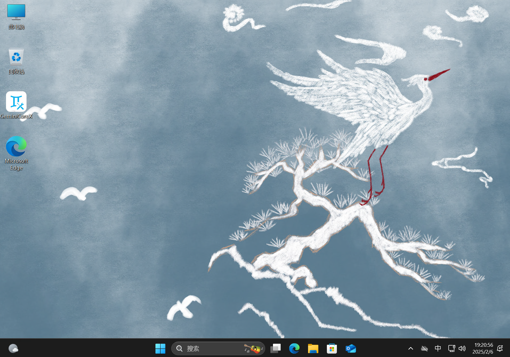

版本发布
版本发布
基于 Windows 11 24H2 的 Original YuanZiEOS 2 与 基于.NET Core WPF 的 GeminiCoreX 于 2025 年 2 月 6 日正式发布。

此次，Original YuanZiEOS 2 的版本号为 OS2.0.204.1.GCXCNOG，分为标准版（Normal）与增强版（Enhanced）。其中，标准版为未启动过的镜像，因此可以进行离线增删预配包等增强版做不到的操作；但是增强版的功能比标准版多样，包含 GeminiCoreX 等应用程序。
请注意，若要断网过 OOBE（开箱体验），并创建本地账户，请在进入 OOBE 后拔掉网线（不连接 WiFi），按下 Shift + F10 在弹出的 CMD 中输入 "OOBE\ByPassNRO"（不要加上引号，不用区分大小写），按下回车，系统重启后，在联网阶段选择“我没有 Internet 连接”
更新日志
以下内容全版本都适用：
升级 Windows 版本至 24H2，体验最新的特性
修改 微软输入法中英文切换热键为 Ctrl，可在设置中调回 Shift
启用 复选框以选择文件
启用 可见已知类型文件扩展名
修改 默认主题
禁用 文件资源管理器主文件夹与「开始」菜单推荐的项目中的最近文件记录
预装 Dolby Digital Plus OEM，恢复被微软精简掉的杜比数字（AC-3）解码器
预装 来自 OEM 的 HEVC 视频扩展，轻松解码 H.265 视频
预装 Dolby Vision 杜比视界 APP
修改 OEM 信息
隐藏 快捷方式角标小箭头
保留 OOBE（开箱体验），创建属于自己的用户
以下内容仅增强版适用：
修改 组策略更新服务器地址，禁用 Windows 更新的同时不影响 Windows Update 服务，保证应用商店的正常使用
显示 此电脑图标
导入 数字门票，以便数字激活 Windows
预装 GeminiCoreX APP，随心随意定制主题
预装 便携版 Bandizip，解压不愁
预装 .NET Core 8.0 运行库，以便使用包括 GeminiCoreX APP 在内的基于 .NET 8.0 构建的 WPF 应用
预装所有 MSVC 运行库
预装 Microsoft 365 家庭和学生版，需自己激活或购买正版
我该选择哪个版本？
标准版镜像大小 5.31 GB，安装后占用 21.7 GB，增强版镜像大小则达 7.91 GB，安装后更是达到 28 GB；但是增强版的使用体验明显比标准版优秀，还附带了 GeminiCore APP；因此，在存储空间足够的情况下，增强版是个明智的选择
但是，如果你希望有更高的镜像修改自由度，比如向镜像文件离线添加 APPX 应用包，那你可能只有标准版可选
另外，与增强版一样，标准版的系统根目录里存着 GeminiCoreX 的系统授权许可证，故你可以下载 GeminiCoreX 的部署包在标准版手动部署
配置要求
最低配置要求：
·CPU：6th Gen Intel Core i5 / 锐龙 3 1000 系或其它相似性能的 x86_64 CPU
·GPU：Hyper-V 视频（CPU 渲染）
·RAM：4GB
SSD：45GB 以上
屏幕：1920 X 1080 @ 30Hz
推荐配置要求：
·CPU：12th Gen Intel Core i5 / 锐龙 5 5000 系或其它相似性能的 x86_64 CPU
·GPU：Intel Iris Xe Graphic 96EU 或 AMD Radeon 740M 或其它相似性能的核显
·RAM：16GB
SSD：128GB 以上
屏幕：3840 X 2160 @ 60Hz
下载链接
正在上传，请耐心等候......